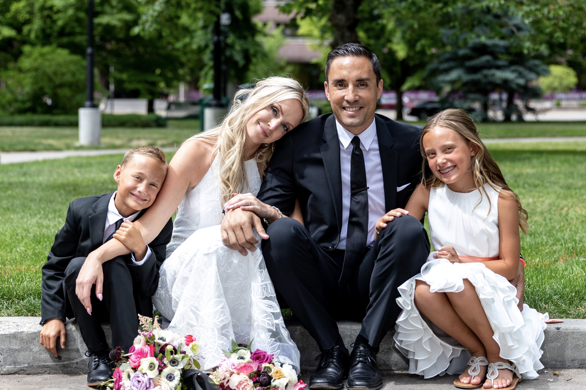

About Me
Richard "RJ" Pupunu was born and raised in Salt Lake City, Utah. He attended Catholic school most his life. After graduating from Judge Memorial in 2000, he moved to Tempe, AZ where he completed both his undergrad degrees and his MBA at Arizona State University. He holds an MBA in International Business Management and dual bachelors in Chemistry and Business Management.
In 2006 he moved back to Utah to start his first company Alpine Auto Transporters, a transportation software company that provided car dealerships and auctions nationwide with real time tracking for all their vehicles bought and sold outside their home states. After partnering with eBay Motors for a number of years, he went on to sell the company to DealerTrack in 2013. Since then, RJ has had his hand in countless projects, founding multiple companies across a wide variety of industries, and in 2013 his accomplishments were recognized by Utah Business Magazine. In February 2013 he was a recipient of their 40 Under 40 Award.
RJ now resides in Daybreak South Jordan, UT with his wife Natalie, their twins Nomi and Kingston, and their Frenchie Steve. He enjoys golf and pretty much any activity that requires being active and spending time with his family.
Connect With Me